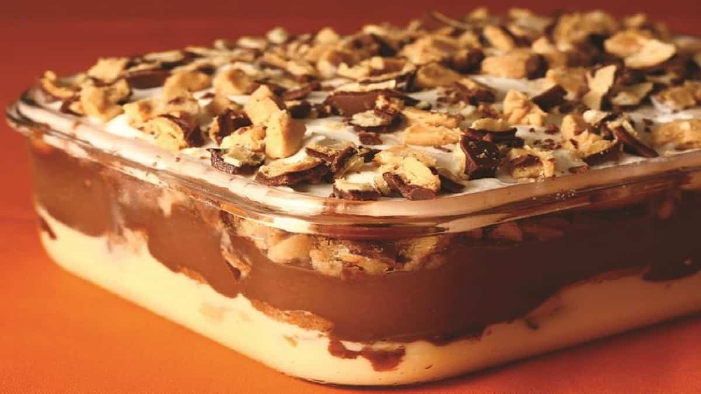
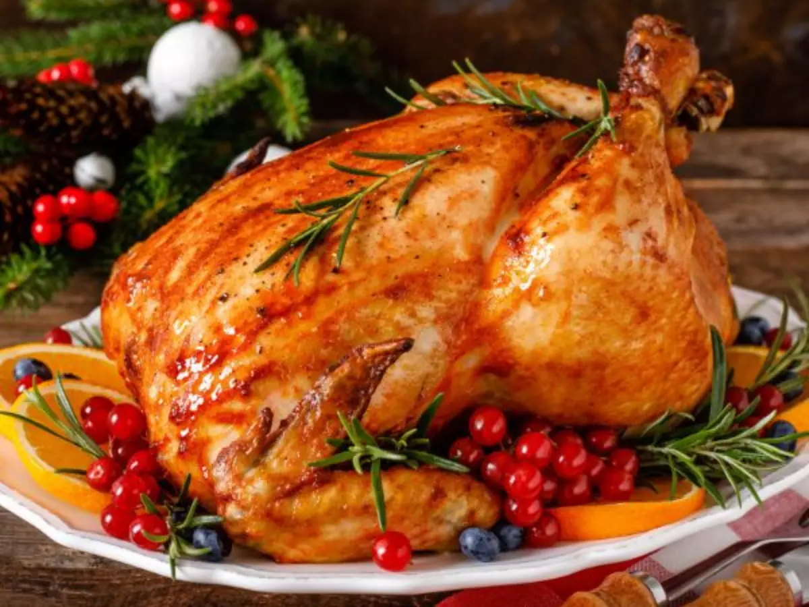

Pave de moranga ou Pave: uma sobremisa muito conhecida e tipica natalina

Peru ou Frango Assado: o peru é frequentemente o protagonista da ceia de natal

Outras sobremesas de natal como panetone ou arvore de frutas ou putim entre outras sobremesas natalinas